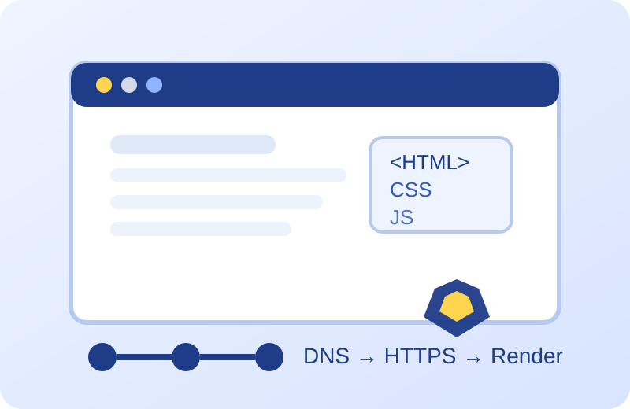

Welcome
Web browsers are one of the most important software tools in everyday computing. They connect users to websites, cloud tools, streaming platforms, online shopping, and educational resources. This website explains how browsers work and why Google Chrome became one of the most influential browsers in the modern web era.
In this milestone, the site has been expanded with stronger page design, more detailed content, additional learning resources, and a self-assessment quiz so readers can test what they learned after exploring the site.

Figure 1. Visual summary of browser technology, security, and web communication.
What You Will Learn
Connects a typed web address to the correct server on the internet.
Protocols used to request, send, and secure web resources.
The rendering engine Chrome uses to display page content.
Chrome's JavaScript engine for faster interactive web apps.
Security isolation that helps protect the operating system.
Web applications that feel more like installable software.
Table of Contents
Website Goals
- Explain how browsers operate in the client-server model.
- Describe major Chrome technologies such as Blink, V8, and sandboxing.
- Show how Chrome influenced modern web standards and expectations.
- Review important vocabulary connected to browsing, security, and performance.
Why the Topic Matters
As web applications become more advanced, browsers do much more than simply display text. They manage network requests, execute scripts, store data, render complex layouts, and enforce security protections. Understanding browsers helps explain how websites work behind the scenes and why browser design matters for both users and developers.